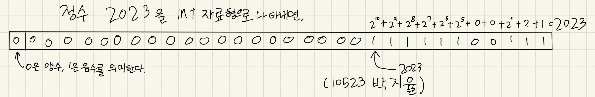
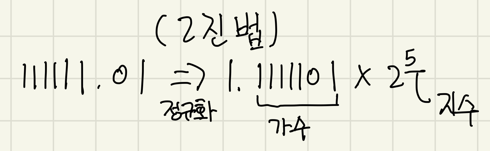
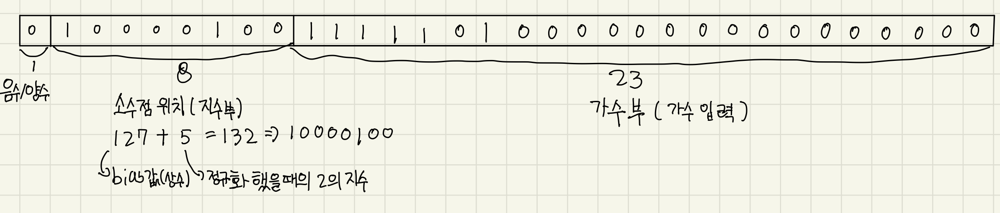

1.자연수를 2진법으로
컴퓨터는 모두가 알다시피 0 과 1로 이루어져 있다. 컴퓨터는 2진법으로
구성되어있기 때문이다.
하지만 우리는 0부터 9까지로 이루어진 10진법을 사용하고 있다. 이러한
숫자들을 2진법으로 변환하려면 어떠한 과정들을 거쳐야 할까? 그리고 그
과정에서 문제는 없을까?
먼저 자연수들을 2진법으로 나타내면 어떻게 될까?
자연수의 2진법 변환 예시(눌러서 확대)
이처럼 간단히 나타낼 수 있다. 하지만 이렇게 숫자들을 만들어내면, 음수,실수들을 표현할수 없다.
2.정수와 실수를 2진법으로
여러가지 프로그래밍 언어들은 음수,실수들을 표현하기 위해서 이런
방식이 아닌 다른 방법을 이용하여서 10진법 숫자들을 표현한다
대표적으로 예를 들어 c언어에서는 int 자료형과 float 자료형을 사용하여
각각 정수, 실수를 표현한다.
2-1.int 자료형으로 정수 표현
먼저 int 자료형에서는 32비트=4바이트(32자리의 2진법 숫자)를 사용하여
자료를 나타내는데, 먼저 가장 첫번째 비트에는 해당 값이 양수인지
음수인지 판별하게 해주고,
나머지 31개의 비트에 자료의 값을 입력하여 정수를 나타낼수 있게
된다.
int자료형의 예시(눌러서 확대)
이처럼 나타낼 수 있다.
2-2.float 자료형으로 실수 표현
그리고 실수를 저장할수 있는 float자료형은 꽤나 특이한 방법으로
저장한다.
프로그래밍 언어들이 실수를 저장할때는 부동소수점 방식을 이용하여
실수를 저장하는데, 그중에서 국제적으로 표준이 된 IEEE 754 방식을
사용하여 실수를 저장한다.
IEEE 754 부동소수점 방식을 사용하는법은 먼저 실수의 값을 이진법으로
변환한다. 예를들어 63.25는 2진법으로 바꾸면 111111.01이다.
하지만, 2진법에 소수점을 넣을수는 없기 때문에 이러한 식에서 소수점의
위치를 옮겨주어야 한다. 따라서 이 숫자를 2진법으로 온전히 표현하기
위해
음/양을 표시하기 위해 1비트를 쓰고 남은 31비트중 8비트를 소수점이
들어갈 위치를 알려주게 하고(지수부),
나머지 23비트에 숫자의 값을
입력하여서 실수를 표시하게 된다.(가수부)
부동소수점 사용예시 (63.25)(눌러서 확대)
 3.float자료형의 문제점
그런데 이때의 문제점은 10진법에서 2진법으로 실수를 변환할때, 0.1같은
숫자는 무한소수로 표시되게 된다. (0.0001100110011....)
이러한 문제때문에 수많은 프로그래밍 언어에 1.1+0.1을 물었을때, 정확한
값을 내놓지 못한다.
당장 크롬 개발자 도구 콘솔창에서 1.1 + 0.1을 출력해봐도 정확한 값이
나오지 않는다.
이러한 부정확함때문에 1991년 미 걸프전에서 패트리어트 요격 미사일의
부정확한 시간 측정으로 미군 28명이 전사했던 사건도 있었다.
간단한 참고자료
크롬 개발자도구 콘솔창(javascript)(눌러서 확대)

3-1.이러한 문제점의 해결방법
1.float보다 더 정확한 자료형인 double을 사용한다.(float는 32비트의
공간을 사용하지만, double은 64비트의 공간을 사용하여 훨씬 더
정확하다)
2.단위를 더 쪼개어 사용한다. (예를들어 1sec를 1000ms로 쪼개어 0.1초를
100ms로 사용한다.)